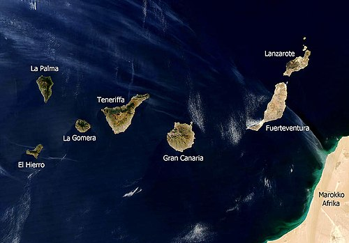

Wyspy Kanaryjskie (Islas Canaris)

Wyspy kanaryjskie to archipelag wysp położonych ma
połnocny zachod od wybrzeży
Liczba ludności:
1.99 mln
Powierzchnia: 7442
km2
Oficjalny język:
Hiszpański
Wybrane wyspy wchodzące w skład archipelagu:
- Lanzarote
- Fueteventura
- Gran Canaria
Więcej informacji:
https://pl.wikipedia.org/wiki/Wyspy_Kanaryjskie